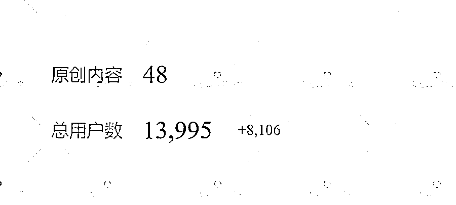
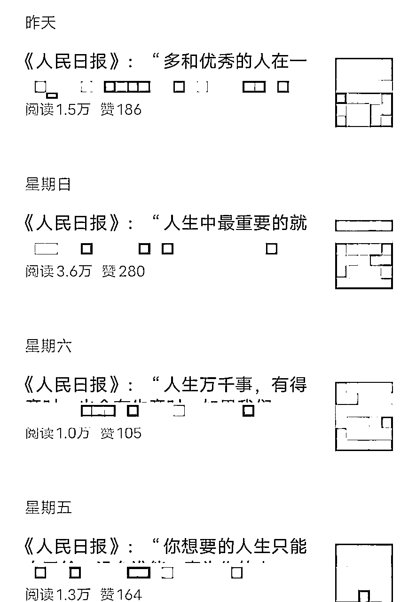
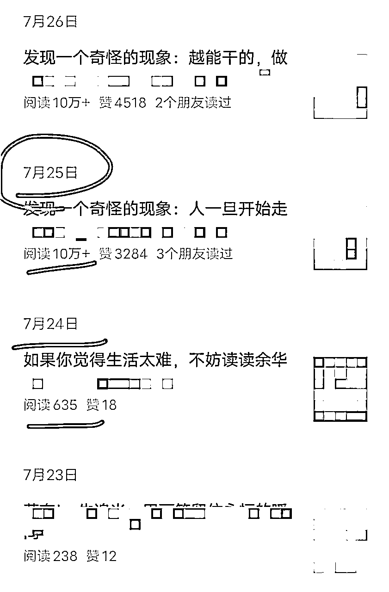
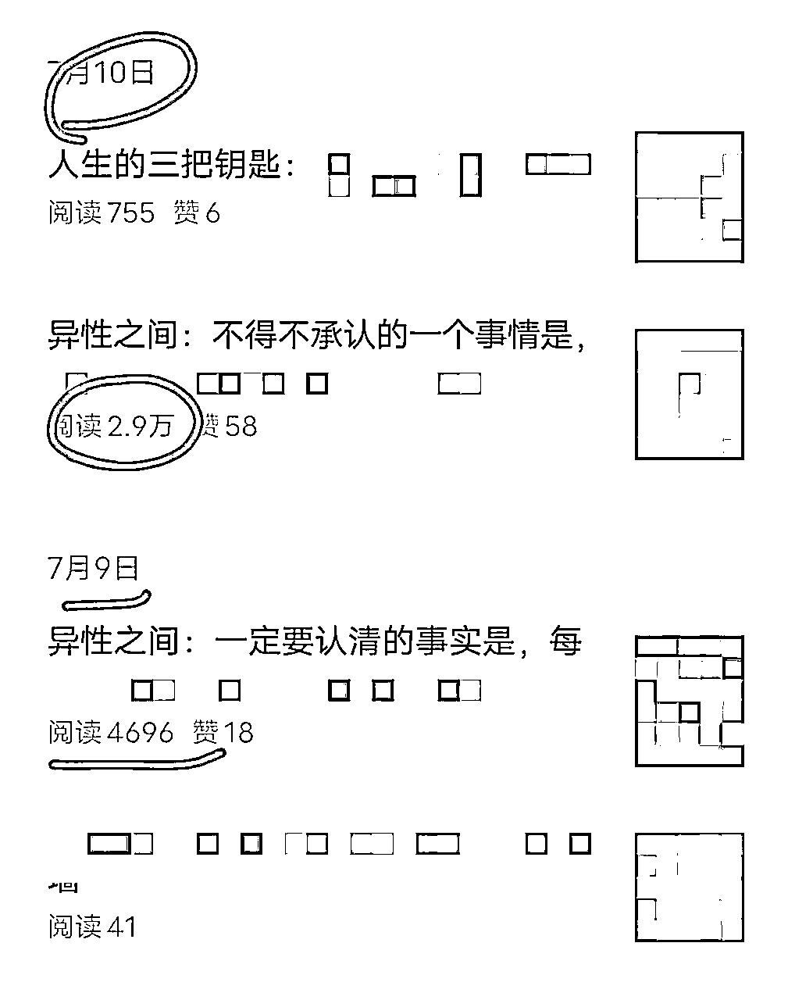
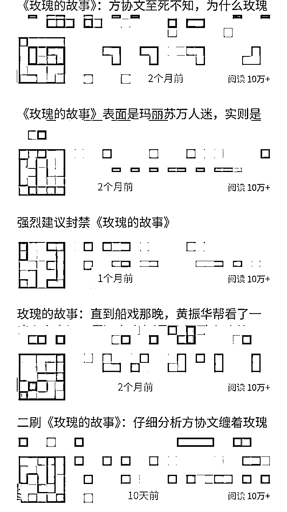

来源：https://die28mmde0k.feishu.cn/docx/Xx64d1eSOo3q0qxLPmQcAvmqn6e
嗨，各位圈友老铁们好，我是安七，应届毕业生，一年双百万。
这是关于“AI公众号爆文系列”的第4篇，过往
【系列1：】
战略篇：坦白局——公众号爆文还值得做吗？
文章（精华帖）：https://t.zsxq.com/GjvBy
【系列2：】
数据篇：精华or水帖？用事实说话：04年大二助理，历时一年，从小白到平均3天一篇10w+爆文机……
文章：https://t.zsxq.com/003Ug
这是【系列3：】领域推荐篇
【写在前面】：
文章基于我目前刷到的，24年8月份的一些数据情况做的部分判断，非官方权威，仅供参考，辩证对待，灵活运用！
（拆解是为了提供思路，不做其他，所以会对账号马赛克处理）
下面正式开始：
公众号的女性成长类，大多来源于小红书的女性成长爆款笔记，一个思路：小红书爆过的，搬到公众号上来，也比较容易爆。
女性成长类，我把它分为2个细分类：
一种，是“建议女生：……”
一种，是“我发现，女生：……”
可以看到，数据还不错，虽然看起来近期没有爆款，但是不一定，根据我们的实操，有在这方面出百万爆款的。
这个领域的优点是：
容易结合IP打造爆款，易实现IP+爆文结合，且比较持续，粉丝粘性不错，引流私域率OK。
哪怕最后爆文周期结束，跌落了，但是涨的粉丝实打实存在的。
可以和大家分享下，我这边做这个类型，实操的一些数据：

原创才48篇，从0粉丝开始起号的，一个多月时间，涨了1.3W粉。
缺点？暂时没有明显缺点，除非你的号写这个领域不合适，怎么写都起不来。
跟经典的读书推荐、书籍内容拆解类目不一样的是，最近《人民日报》开头的偏读书类内容，阅读量还不错。
给大家看下，真实的数据截图：
这个号是今年2月份注册的，最近趋势还不错：

这个类型也比较好做，模仿同行的爆款标题、封面，调配出你自己的ai口令，或者手搓，改改，难度不大。
最近还有一种类型的，阅读量也比较异常。
这种：“我发现一个奇怪的现象” “我发现一个玄学现象”等
这个号是今年7月份注册的，截止到8.13号，发文33篇，从7月25日开始，基本上篇篇5-10W+


其实6月份就有一个写这种类型，差不多篇篇10W+的号了，只不过当时我拿一个号测，没有什么明显效果，就pass了，最近看到比较多的这种，说明还是可行。
就看它是否是你的号的爆款基因了，毕竟，每个号起来的领域是不一样的。
情感类一直是被推荐的赛道，但情感大类下也有细分。
最近发现异常值：这个号，24年6月份注册的，从7月9日转写“异性之间……”的时候，阅读量就直线飙升

热播影视剧这个不用多说啦，蹭最近热播剧的热点。
比如前段时间《与凤行》、《玫瑰的故事》，最近的《抓娃娃》等
有好有坏，好的是，在这个剧宣传期间，是有热度、流量的，你可以一部剧不同的剧情、细节反复拆，一部剧养活一个号，吃透流量
bug是，等这部剧的热度过了，可能就没有那么火🔥了，流量也有所下滑。

不过凡事都有两面，如果在流量期间，收益还不错，变现情况也比较满意，也可以了，警惕人心不足蛇吞象。
如果不想蹭热度，又爱看剧写点的话，写经典好剧也不是不可以，比如《甄嬛传》《知否》等。
不管是热播剧，还是经典好剧，都可以在“豆瓣”上找到。
上面这5个领域，是8月份相对来说流量还不错的选取。
当然，肯定还有其他一些爆款赛道、蓝海赛道，大家也可以自行挖掘。
如果你觉得文章对你有帮助，欢迎点赞，感谢你的慷慨。
附新手小白在做公众号爆文过程中，容易踩的坑（有圈友说，后悔看到晚了，大腿根都要拍断了）：
有其他想看想了解的，也可以评论区留言。
我是安七，我们下期见。